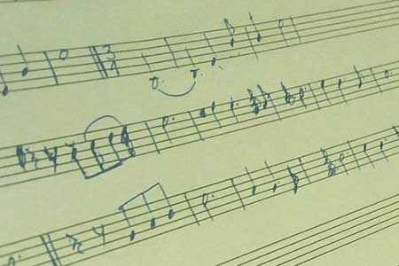

Music [ Recording - Mixing - Mastering ]
Music is a language that transcends all barriers. The Recording & Mixing stage plays an integral part in determining the vibe and feel of any music, keeping that in mind we will help you shape your sound and musical identity.
We have diligently chosen pieces of recording gear to capture your ideas into a medium that allows you to share it with your audience.
Here's a brief overview of the gear that is at the heart of ensuring that you experience a recording and production unlike any other :
DAW & Interface : Pro Tools HDX system running Pro Tools HD 10 using the AVID HD I/O 8*8*8 interface, coupled with the superb sounding Focusrite Octopre Preamps.
Control Surface : AVID Artist Mix is a highly intuitive controller that provides a sense of not working in the box with the advantages of working in the box, therefore speeding up the workflow.
Supported by state of the art gear along with a variety of plug-ins and microphones we will make certain that your sound will translate in the best possible way and that the end result is something that stands outand is a complete custom production for you.